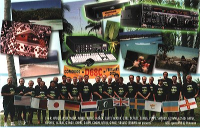
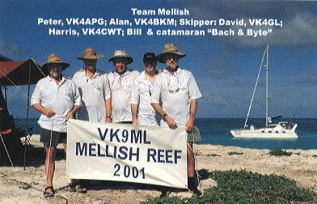

|
Flash ! DX 6m Today
|
Reportの読み方
[ Back Issues Jul.2001]
TIME:UTC(JST-09:00)
Report from JA1RJU (PM95sq)
31.Jul.2001(15:00e)
*BY-TV 00:00- 49.750 --
*9M-TV 02:00- 48.240/260 --
BG7OH 04:47 50.115 SSB
9M2TO/B 08:40- 50.005 CW Beacon
*VK-TV 09:00- 46.172 --
JF8HIQ/JD1 09:13 50.117 SSB Minami Torishima
VK4JH 09:35 50.110 CW/SSB
VK4RIK 09:45- 52.445 CW Beacon
VK4ABP 09:45- 52.347 CW Beacon
VK4BRG 09:45- 50.077 CW Beacon
VK4FNQ 09:52 50.100 CW
|
◎ 期待された"火曜日のEX8"は、残念ながら今回もパスは無かった。
例によって、04:00z頃からEX8MLE(50.088にQRV)、EX8MLT(50.170にQRV)からクラスターに"CQ JAPAN"のQRV開始が告げられた。
その途端に、"EX8がQRVしている"はずのこの周波数で多くのJA'sがCQを出し始めたのはなぜ??。
毎回、EX8'sにはJAから"メール"が殺到しているとの事だが、
「こちらはQRPなのでそちらから呼んでくれ....」とでも言われたのか？
◎ 一年間の"特別許可"で運用していたインド(VU)の6mと30mの免許は、
2001年7月31日、18:30UTC(8月1日04:30JST)で失効する事になっていたが、
期限ギリギリの7月31日の深夜になって、下記の周波数帯の運用許可が2002年1月31日までの期限付きで延長される事になった。
3790－3800KHz
10100－10150KHz
50.35 & 50.55MHz
(TNX VU2JOS & JF2MBF)
|
30.Jul.2001(15:00f)
*BY-TV 00:00- 49.750 --
BD4ABC 06:07 50.110 SSB
DS3EXX 06:50 50.210 SSB
HL5XF 06:51 50.130 SSB
*ZL-TV 07:00- 45.24/25/26--
*VK-TV 07:25- 46.172 --
*9M-TV 07:25- 48.240/260 --
BD2OG 08:36 50.110 SSB
HL5XF 06:51 50.120 SSB
DS5GSP 08:55 50.127/135 SSB
VK4CXQ 09:01 50.119 CW
HL1JV 09:10 50.110 SSB
VK4GL/MM 09:11 50.110 SSB
VK4BRG 09:25- 50.077 CW Beacon
|
◎ 午後から南西、北方向の強力な国内Esが発生。北方向はJA7など500Km前後の近距離のパスが夕方まで続いた。
|
29.Jul.2001(15:00c)
*BY-TV 00:00- 49.750 --
BG2OO 03:00 50.110 SSB P.O BOX 1157 Chang Chun
BW0N 04:25 50.110 SSB OP.BV2WN
28.Jul.2001(15:00f)
VR2XMT 22:30 50.110 SSB
*BY-TV 00:00- 49.750 --
JM1MKB/JD1 00:32 50.120 SSB Chichijima
BV4CN 01:58 50.125 SSB
JD1BKZ 02:35 50.120 CW OP.JM1MKB/JD1
*9M-TV 03:00- 48.240/260 --
9M2TO/B 03:05- 50.005 CW Beacon
*??-TV 04:20- 48.250 -- 300
HL5XF 04:32 50.130 SSB/CW
DS3EXX 04:51 50.210 SSB
HL1/WX8C 05:55 50.145 SSB
*VK-TV 09:00- 46.172 --
VK4FNQ 09:02 50.110/105 CW loud !
VK6JQ 09:18 50.110 CW
VK6RSX 09:18- 50.304 CW Beacon
VK8RAS 09:20- 50.047 CW Beacon weak
BI4U 09:42 50.110 SSB OP.Kin IOTA AS-135. QSL BA4RD
VK4JH 11:56 50.110 CW
27.Jul.2001(15:00e)
*BY-TV 00:00- 49.750 --
*9M-TV 04:30- 48.24/25/26--
UN1SIX 04:43- 50.024.6 CW Beacon
*??-TV 07:55- 48.250 -- 300
VK6RSX 08:55- 50.304 CW Beacon
VK6JQ 09:18 50.105 CW
|
◎ 05:00z前後に約30分ほどUN1SIXのBeaconが入感、1エリアでは04:55z頃が最も強かった。
夕方に入感したVK6'sも強力だった。
|
26.Jul.2001(15:00e)
*BY-TV 00:00- 49.750 --
*9M-TV 00:30- 48.240/260 --
HL1LTC 03:47 50.120 SSB
HL5XF 04:20 50.130 CW
*VK-TV 09:30- 46.172 --
VK4BRG 09:40- 50.077 CW Beacon
*??-TV 12:40- 48.250 -- 310 Loud !
UN1SIX 12:50- 50.024.6 CW Beacon weak
HL1KTX 13:10 50.110 CW/SSB
25.Jul.2001(15:00f)
*BY-TV 00:00- 49.750 --
*9M-TV 00:00- 48.24/25/26--
BV2NT 00:47 50.110 SSB
9M2TO/B 01:05- 50.005 CW Beacon
VR2ZGC 01:42 50.110 SSB
VR2ZNC 01:57 50.110/115 SSB
VR2ZST 01:57 50.110 SSB
9M6**C 02:05 50.110 SSB
VR2XMT 02:11 50.135 SSB
VR2XVD 02:33 50.110 SSB
VR2ZXP 03:20 50.110 SSB
BD4ABC 03:21 50.110 SSB
HL5XF 03:30 50.140 CW/SSB
P29BPL 11:38- 50.029 CW Beacon
VR2XMT 12:38 50.110 SSB
|
◎ 午前中はVR2、9M2、BD4など、大陸方面のDXが九州、沖縄などの国内と共に強力に入感。
昼を過ぎた頃から東京地方は"大気不安定"による雷を伴う大荒れの天候となった。
渇水状態だった都市部に大雨と落雷の被害をもたらしたこの"大荒れの天候"が収まった後は、
大陸方面からのTVも入感しないほど、6mは"静か"になってしまった。
|
24.Jul.2001(15:00d)
*BY-TV 00:00- 49.750 --
JD1BKZ 04:00 50.110 CW Chichijima
DS3EXX 08:52 50.190 SSB
BD4ABC 09:13 50.110 SSB
HL1LTC 09:55 50.130 SSB
|
◎ 週末に上昇していたコンデションも、週明けの昨日、今日とまた落ち込んでしまった。
期待された"火曜日のEX8"も、03:00z頃からJA向けのQRV情報がクラスターに書き込まれたものの、
残念ながら今日のオープンは無かった。
|
23.Jul.2001(15:00d)
*BY-TV 00:00- 49.750 --
BD4ABC 00:55 50.110 SSB
*9M-TV 08:00- 48.240/260 --


Comoros Is.から運用したD68CのQSLの発行が始った。
2枚折り、4面フルカラーのFBなQSL。
22.Jul.2001(15:00g)
Report from JA1RJU/1 (QM06ca)
*BY-TV 00:00- 49.750 --
XV3AA 00:20 50.130 SSB
VR2XMT 00:45 50.160 SSB
Report from JA1RJU (PM95sq)
*BY-TV 04:00- 49.750 --
*9M-TV 04:00- 48.240/260 --
HL1AEY 04:35 50.105 CW
HL1/WX8C 05:05 50.140 SSB
DS2CYI 05:35 50.150 SSB
DS1MFC 06:07 50.115 SSB
*??-TV 06:20- 48.250 -- 300deg
VR2XMT 08:45 50.110 SSB
BV2SR 08:53 50.110 CW
BW0RS 09:20 50.125 SSB QSL BV4IE
YB0UNC 09:58 50.110 CW
BW0TCC 09:59 50.115 SSB QSL BV4CN
VR2BG 10:10 50.100 CW
VR2LC 10:19 50.110 CW
VK6JQ 10:25 50.097 CW
BV6GU 13:15 50.110 SSB
BV6HJ 13:35 50.110 SSB
|
◎ 落ち込んでいたコンデションも、この週末は近・中距離のDXの入感で賑わっている。
北米→ヨーロッパなど大陸間のパスが盛んな欧米に比べ、JAにはコンデションが上がっても"適当な距離"にエンティティーが少ないのが残念。
先週のEX8の様に、QRVすれば伝搬の可能性のあるエンティティーのアクティブなQRVを期待したい。
"火曜日のEX8"が楽しみ。
|
21.Jul.2001(15:00e)
*BY-TV 00:00- 49.750 --
JD1ADP 00:20 50.145 SSB/CW
JD1BIA 00:23 50.140 SSB
BV3FQ 01:10 50.115 SSB
VR2HAM 03:15 50.105/115 CW
BV9AYA 03:30 50.115 SSB QSL JH3JWW
VR2BG 07:20 50.100 CW
BD4ABC 07:24 50.110 SSB
BX2AB 07:24 50.110/120 CW
XV3AA 07:30 50.130 SSB
BV9AYA 07:43 50.160 SSB
*9M-TV 08:00- 48.260 --
HL2DIB 08:28 50.208 SSB
XV3AA 08:55 50.130 SSB
DS5JQK 09:43 50.145 CW
BX2AB 09:47 50.193/120 SSB/CW
BW0RS 11:02 50.120 SSB
XW0X 11:31 50.115 SSB
VR2XMT 11:36 50.120 SSB
20.Jul.2001(15:00c)
*BY-TV 06:00- 49.750 --
Report from JA1RJU (PM95sq)
19.Jul.2001(15:00c)
*BY-TV 00:00- 49.750 --
18.Jul.2001(15:00f)
*BY-TV 00:00- 49.750 --
*9M-TV 03:30- 48.260 --
UN3G 06:38 50.110 SSB/CW
UN1SIX 06:48- 50.024.5 CW Beacon (MN83KE)
UN1SIX 07:40- 50.024.5 CW still good
|
◎ 今日も西方向のコンデションがオープン、UN(Kazakhstan)が入感していた。
UN3GがJA'sとQSOしていたが、信号は強いものでは無かった。
UN3Gが聞こえなくなった後も、弱いUN1SIX(GL=MN83KE)のBeaconが一時間以上も聞こえていた。
昨日JA6で入感したEX8'sは、ローカルのTV電波の妨害を受けこの時間帯はQRV出来ない。
03:00-06:00zにTVが停波する、来週の火曜日に期待。
|
17.Jul.2001(15:00d)
*BY-TV 00:00- 49.750 --
(EX8MLE 04:09- 50.110 CW JH6VXP)
(EX8MLT -05:53 50.170 SSB JH6VXP)
◎ 04:26z頃にClusterを通じてキルギス(Kyrgyzstan)のEX8MLTから"JA向けにCQを出している"との書き込みがあり、
DXの入感を期待してワッチしていた各局を色めきたたせた。
1エリアではこの時間は、何時も入感してくる9M-TVも聞こえない"悪コンデション"に思われたが、
半信半疑でワッチしている最中の05:53zに、再びEX8MLTからJH6VXP(大分県)とのQSO(50.170MHz、SSB=RS57)がClusterにリポートされた。
このリポートの直後にEX8MLT(Oleg)からJF2MBF・市野さん宛てにQSOの模様がメールで報告された。
この報告によると、この日の朝(現地時間)、ローカルのEX8MLEから「JAとQSOした」と電話があったため、
急きょ、EU向けに固定されていたアンテナをJAに向け、Clusterにリポートした後、"CQを出し始めた"模様。
この直後にEX8MLTもJH6VXPとのQSOに成功した。
JH6VXPと先にQSOしたEX8MLE(OP.Sergio)がJA-EXの初QSOだったが、この日のオープンは同じJA6でも限られたエリアのスポットな入感だったと思われる。
現地(Bishkek)では出力6KWのTV局があり、これが放送中にはバンドが使えなくなると。
放送が停波(OFF)になっている時間は18:45z-01:30z(03:00-10:30JST)だけとのことなので、
JAとのQSOは時間的にもかなり難しい。
ただし、火曜日は03:00-06:00z(12:00-15:00JST)にも停波するとのことで、たまたま、
火曜日だったこの日にJAとのオープンに恵まれると言う幸運も加わりJA-EXの初QSOが記録された。
EX8MLTの使用RIGはIC-706MK2(100W)+3ele Quad。
(TNX JF2MBF)
|
16.Jul.2001(15:00d)
*BY-TV 00:00- 49.750 --
BD4ABC 01:42 50.110 SSB
*9M-TV 07:00- 48.240/260 --

4/21-24にMellish ReefからQRVしたVK9ML
15.Jul.2001(15:00d)
*BY-TV 00:00- 49.750 --
*VK-TV 00:30- 47.172 --
VK4BLK 00:45 50.110 CW
*9M-TV 01:30- 48.240/260 --
VR2XMT 02:26 50.110/115 SSB
HL1KTX 02:52 50.110 CW
14.Jul.2001(15:00d)
*BY-TV 00:00- 49.750 --
*9M-TV 05:00- 48.240/260 --
4W6UN/B 12:20- 50.097 CW Beacon
13.Jul.2001(15:00f)
W6/7's 22:55-23:45 CW/SSB
(K6FV/B.K6QXY.WA6JRA.N6CA
NN7J.W7EW.KB7WW.WX7R.K7OFT.etc)
*BY-TV 00:00- 49.750 --
*9M-TV 00:00- 48.240/260 --
N9JIM/6 01:20 50.110 CW CM87
WA6JRA 01:24 50.100 CW DM13
K6QXY 01:33 50.105 CW CM88
N6CA 01:37 50.105 CW DM03
N6JV 01:48 50.099 CW CM98
BD4ABC 03:21 50.110 SSB
VR2IO 03:22 50.110 SSB
HL5XF 05:25 50.120 SSB
DS5MHE 05:28 50.117 SSB
◎ 23:00z(08:00JST)少し前から北米(W6/W7)がオープン。
入感エリアは狭く、W7はOregon(GL=CN84/85)、Washington(CN87)付近。
W7は00:00z前にフェードアウトしたが、W6・Californiaはその後も引き続き入感、弱い信号ながら01:55z頃まで聞こえていた。
|
12.Jul.2001(15:00c)
*BY-TV 00:00- 49.750 --
*VK-TV 09:00- 46.172 --
11.Jul.2001(15:00e)
*BY-TV 00:00- 49.750 --
*9M-TV 03:00- 48.240/260 --
BV2OL 03:59 50.110 CW
*VK-TV 08:30- 46.172 --
|
◎ 関東・甲信地方は平年より9日早く"梅雨明け"となった。
|
10.Jul.2001(15:00d)
*BY-TV 00:00- 49.750 --
HL1LTC 01:08 50.110 CW/SSB
|
◎ "定説"通り、2日連続のW/KL7のオープンも無い静かなコンデション。
|
09.Jul.2001(15:00g)
*BY-TV 00:00- 49.750 --
*9M-TV 01:00- 48.240/260 --
BD4ABC 01:56 50.110 SSB
K6FV/B 06:30- 50.096 CW CM87 Beacon
WA6JRA 06:31 50.110 CW DM13
K6KLY 06:39 50.100 CW CM87
N9JIM/6 06:59 50.102 CW CM87
W6YM 07:04 50.100/103 CW CM98
KL9A 07:08 50.100 CW BP51 QSL via AC7DX
W0SD/KL7 07:29 50.110 SSB
KL9A 07:46 50.098 CW
WA6JRA 07:45 50.110 CW -08:20z F.out
*??-TV 12:00- 48.250 -- QTF 300
|
◎ 06:30z(15:30JST)頃からW/KL7がオープン。 最初に聞こえてきたK6FV/B、WA6JRAは比較的強かったものの、
全般的にこの時間にオープンした6月12日の時に比べ信号は弱く、QRVしている局数も少なく、
2時間近く聞こえていたわりには、"盛り上がり"に欠けるオープンだった。
|
08.Jul.2001(15:00f)
*BY-TV 00:00- 49.750 --
DU1EV 02:09 50.110/103 CW
*9M-TV 03:00- 48.240/260 --
9M2TO/B 05:20- 50.005 CW Beacon
VR2XMT 09:55 50.115 SSB
VK8MS 12:11 50.110 CW
07.Jul.2001(15:00g)
*BY-TV 00:00- 49.750 --
*9M-TV 00:00- 48.240/260 --
9M2TO/B 01:10- 50.005 CW Beacon
VR2ZGC 01:16 50.110 SSB
BV2NT 01:28 50.110/120 SSB
JI2AMA/JD1 01:38 50.141 SSB Minami Torishima
BD4ABC 01:40 50.115/120 SSB
DU1ZV 03:00 50.115/130 CW/SSB OP & QSL JA1BRK
9M2TO/B 03:30- 50.005 CW Beacon
BV4QI 04:00 50.110/120 SSB
*VK-TV 06:00- 46.172/240 --
VK4BLK 06:56 50.110 CW
FK8CA 08:03 50.110 CW
VK6RSX 08:20- 50.304 CW Beacon
VK2QF 08:37 50.110 CW/SSB
FK8HA 08:53 50.110 SSB
VK4APE 08:57 50.110 SSB
VK4FNQ 08:59 50.110/180 SSB
9M2KT 09:05 50.110 SSB
9M2TO/B 09:05- 50.005 CW Beacon
9M6SMC/B 09:05- 50.014 CW Beacon
◎ 午前中は今日も大陸方面のコンデションが上昇、西マレーシアは日中、ほとんど連続してオープンしていたが、
夕方に聞こえた9M2KTは強力。夕方からFK8's、VK2/4'sも良く聞こえていた。
サイクルのピークは過ぎたとは言え、コンデションはまだ上昇期なので、Esの発生が弱まった時間帯にはF2によるDXも狙える。
土、日曜日はコンテスト(6m AND DOWN)なので、またスプリアスに悩まされそう？。
|
06.Jul.2001(15:00f)
*BY-TV 00:00- 49.750 --
*VK-TV 01:00- 46.172 --
VR2XMT 01:02 50.115/150 SSB
VR2BG 01:15 50.100 CW
*9M-TV 02:00- 48.240/260 --
BX2AB 02:13 50.110 CW
BD4ABC 02:15 50.110/120 SSB
VR2ZGC 02:16 50.110 SSB
VR2ZNC 02:22 50.110 SSB
HL5XF 03:15 50.134 CW
VK6RSX 09:27- 50.304 CW Beacon
VR2ZNC 09:53 50.115 SSB
BD4ABC 12:45 50.110 SSB
*??-TV 13:00- 48.250 -- QTF 300
VR2XMT 13:24 50.110 SSB
|
◎ 午前中は大陸方面のコンデションが上昇、VR2/BDが強力。
03:25z頃に北米・オレゴン州(CN74)からJE7YNQ(福島)のビーコン入感がクラスターにリポートされる。
ノイズや40MHz帯の感じから察して、オープンしても良さそうなさそうな"雰囲気"だったが、
北米(W6/7)、VE7(カナダ)とKL7(アラスカ)のQSOが04:20-06:30頃にリポートされただけで、期待されたJAとのオープンは無かった。
|
05.Jul.2001(15:00d)
*BY-TV 00:00- 49.750 --
HL5XF 00:50 50.130 CW/SSB
*??-TV 13:30- 48.250 -- QTF 300
04.Jul.2001(15:00e)
*BY-TV 00:00- 49.750 --
*9M-TV 07:00- 48.240/260 --
9M2TO/B 11:00- 50.005 CW Beacon
VR2ZGC 11:28 50.110 SSB
BD4ABC 11:29 50.110 SSB
BG7OH 11:30 50.110 SSB
03.Jul.2001(15:00e)
W/K's 22:00-22:50 CW/SSB JA1.2.3.5.7)
(K6FV/B.K6QXY.KB6NAN.N6JV.K7AD.K7FF.etc)
*BY-TV 00:00- 49.750 --
DS2IMV 00:25 50.110 SSB
DS5GSP 03:12 50.142/138 SSB
HL5XF 04:19 50.130 CW
HL1ASH 07:44 50.110 SSB
HL5XF 08:13 50.110 CW
DS3IGO 09:02 51.123 FM
DS1MFC 11:38 50.126 SSB
|
◎ 珍しく早朝に北米がオープン。最近でこそ北米の入感は昼前後から夕方にかけての日中だけに集中しているが、
JAから初めて北米のマルチホップを経験した1977年当時は、今日と同じ22:00z (日本時間=07:00)頃だった。
|
02.Jul.2001(15:00e)
*BY-TV 00:00- 49.750 --
*9M-TV 01:00- 48.240 --
BD4ABC 01:25 50.110/115 SSB
DS2BSK 02:17 50.101 CW
*??-TV 14:00- 48.250 -- weak QTF 300
01.Jul.2001(15:00f)
*BY-TV 00:00- 49.750 --
VR2XMT 00:43 50.115 SSB
*9M-TV 01:00- 48.240 --
VR2ZGC 01:36 50.110 SSB
VR2BG 02:07 50.100 CW
6K2BTX 04:50 50.110 SSB
DS1CMD 09:33 50.110 SSB
*??-TV 11:40- 48.250 -- QTF 300

VU2ZAPと共に良く聞こえているVU2RM・Rao
FT-620(10W)+3eleでQRVしている。